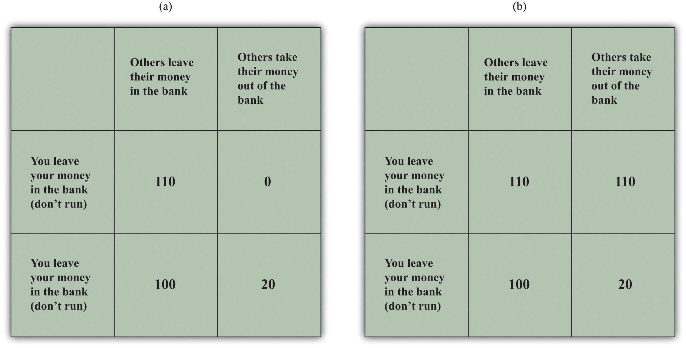

After you have read this section, you should be able to answer the following questions:
Starting in 2007 and stretching well into 2008, the United States and other countries experienced financial crises that resembled those of the Great Depression. Through the summer of 2011 (when this chapter was written), unemployment remained high, and real gross domestic product (real GDP) growth was low in the US economy. Some countries in Western Europe, such as Greece, were close to defaulting on their government debt.
One indicator of the seriousness of these events is the dramatic action that policymakers took in response. For example, on October 3, 2008, President George W. Bush signed into law the Emergency Economic Stabilization Act of 2008, which authorized the US Treasury to spend up to $700 billion for emergency economic stabilization.The full text of the bill and related facts are available at “Bill Summary & Status: 110th Congress (2007–2008) H.R.1424,” THOMAS: The Library of Congress, accessed September 20, 2011, http://thomas.loc.gov/cgi-bin/bdquery/z?d110:h.r.01424:. As stated in the bill,
The purposes of this Act are—
to ensure that such authority and such facilities are used in a manner that—
This was an extraordinary amount of funding—equivalent to more than $2000 for every man, woman, and child in the United States. Perhaps even more strikingly, the funding was to allow the Treasury to do something it had never done before: to purchase shares (that is, become part owners) of financial institutions, such as banks and insurance companies. The United States, unlike some other countries, has never had many cases of firms being owned by the government. Moreover, in previous decades, the trend around the world has been for less government ownership of business—not more. It would have been almost unthinkable even a few months previously for a Republican president to have put in place mechanisms to permit this extent of government involvement in the private economy.
News accounts at the time made many different claims about the financial crisis, including the following:
Each news item has an element of truth, yet each can also mislead. We first sort through the events of 2008 and the policy responses. Then we look at the current state of the economy and at more recent policy actions.
As discussed in Chapter 22 "The Great Depression", the United States and other economies experienced severe economic downturns in the early 1930s, together with instability in financial markets. It was little wonder that news accounts in 2008 and 2009 were filled with discussions of the parallels and differences between then and now. When we looked at financial instability during the Great Depression in Chapter 22 "The Great Depression", we studied a “bank-run game”—a strategic situation where depositors had to decide whether to leave their money in the bank or take it out. The bank-run problem is a leading example of a coordination game—a game with two key characteristics:
In a Nash equilibrium, everyone pursues their own self-interests given the actions of others. This means that no single individual has an incentive to change his or her behavior, given the choices of others. In a coordination game, there is more than one such equilibrium, and one of the Nash equilibria is better than the others. When the outcome of the coordination game is one of the outcomes that are worse than other possible equilibrium outcomes, then we say a coordination failureThe outcome of a coordination game in which one of the equilibrium outcomes is worse than other equilibria. has occurred.
Toolkit: Section 31.18 "Nash Equilibrium"
Nash equilibrium is explained in more detail in the toolkit.
The possibility of coordination failure suggests two more fundamental questions:
Economists know that there are many situations that give rise to coordination games. Bank runs are just one example. In the crisis of 2008, actual bank runs did not occur in the United States, but they did happen in other countries. More generally, the financial instability that arose was similar in nature to a bank run.A recent article by Russell Cooper and Jonathan Willis explores in more detail the significance of coordination problems and beliefs during the recent crisis: “Coordination of Expectations in the Recent Crisis: Private Actions and Policy Responses,” Federal Reserve Bank of Kansas City Quarterly Review, First Quarter 2010, accessed July 25, 2011, http://www.kansascityfed.org/PUBLICAT/ECONREV/PDF/10q1CooperWillis.pdf. Instead of failures of small neighborhood banks, we saw the failure or the near failure of major financial institutions on Wall Street, many of which had other banks as their clients. As noted by then president of the Federal Reserve Bank of New York, Timothy Geithner, the process of intermediation has gone beyond traditional banks to create a parallel (shadow) financial system in the United States: “The scale of long-term risky and relatively illiquid assets financed by very short-term liabilities made many of the vehicles and institutions in this parallel financial system vulnerable to a classic type of run, but without the protections such as deposit insurance that the banking system has in place to reduce such risks”From an address given by Geithner to the Economic Club of New York Press: “Timothy F. Geithner: Reducing Systemic Risk in a Dynamic Financial System,” Bank for International Settlements, June 9, 2008, http://www.bis.org/review/r080612b.pdf?frames=0.
But the use of coordination games does not stop with bank runs. We can think of the decline in housing values as coming from a coordination failure. Even more strikingly, the circular flow of income itself can generate something that looks very like a coordination game. Imagine a situation where the economy is in a recession, with high unemployment and low levels of income. Because income is low, households choose low levels of spending. Because spending is low, firms choose low levels of production, leading to low income. By contrast, when income is high, then households engage in lots of spending. This leads firms to choose high levels of production, leading to high income.
What can governments do in the face of coordination games? One feature of these games is that the outcome of the game depends on the beliefs that people hold. An important aspect of economic policy may therefore be to support optimism in the economy. If people believe the economy is in trouble, this can be a self-fulfilling prophecy. But if they believe the economy is strong, they act in such a way that the economy actually is strong.
There was no single root cause of the crisis of 2008. Economists and others have pointed to all sorts of factors that sowed the seeds of the crisis; we will not go through all these here. What is clear is that the housing market in the United States played a critical early role. As we saw in Chapter 19 "The Interconnected Economy", events in the housing market were linked to events in the credit market, the labor market, and the foreign exchange market.
We begin with an equation that teaches us how the value of a house is determined. In Chapter 24 "Money: A User’s Guide", we explained that houses are examples of assets and that the value of any asset depends on the income that the asset generates. More specifically, the value of a house this year is given by the value of the services provided by the house plus the price of the house next year:
This equation tells us that three factors determine the value of a house. One is the flow of services that the house provides over the course of the coming year. In the case of a house that is rented out, this flow of services is the rental payment. If you own the home that you live in, you can think of this flow of services as being how much you would be willing to pay each year for the right to live in your house. That value reflects the size of the house, its location, and other amenities. The higher the flow of services from a house, the higher is its current price.
The second factor is the price you would expect to receive were you to choose to sell the house next year. If you expect housing prices to be high in the future, then the house is worth more today. This is true even if you do not actually plan to sell the house next year. One way of seeing this is to recognize that if you choose not to sell the house, its worth to you must be at least as large as that price.
The third factor is the interest rate—remember that the interest factor equals (1 + the interest rate). The flow of services and next year’s price both lie in the future, and we know that income in the future is worth less than income today. We use the technique of discounted present value to convert the flow of services and the future price into today’s terms. As in the formula, we do so by dividing by the interest factor. One implication is that a change in the interest rate affects the current value of a house. In particular, a reduction in interest rates leads to higher housing prices today because a reduction in interest rates tells us that the future has become more relevant to the present.
Although we have written the equation in nominal terms, we could equally work with the real version of the same equation. In that case, the value of the service flow and the future price of the house must be adjusted for inflation, so we would use the real interest factor rather than the nominal interest factor.
Toolkit: Section 31.5 "Discounted Present Value"
You can review discounted present value in the toolkit.
Now that you understand what determines the current value of a house, imagine you are making a decision about whether or not to buy a house. Unless you have a lot of cash, you will need to take out a mortgage to make this purchase. If interest rates are low, then you are more likely to qualify for a mortgage to buy a house. In the early 2000s, mortgage rates were relatively low, with the consequence that large numbers of households qualified for loans. In addition, many lenders offered special deals with very low initial mortgage rates (which were followed by higher rates a year or so later) to entice borrowers. The low interest rates encouraged people to buy houses. We saw this link between interest rates and spending in Chapter 25 "Understanding the Fed".
Lenders are also more willing to give you a mortgage if they think the price of a house is going to increase. Normally, you need a substantial down payment to get a loan. But if your mortgage lender expects housing prices to rise, then the lender will think that it will have the option of taking back the house and selling it for a profit if you cannot repay your mortgage in the future.
Thus, the expectation of rising housing prices in the future increases the current demand for houses and thus the current price of houses. In the early and mid-2000s, rising housing prices were seen in many markets in the United States and elsewhere. The rise in prices was fueled at least in part by expectations, in a manner that is very similar to a coordination game.
However, the optimism that underlies the price increases can at some point be replaced by pessimism, leading instead to a decrease in housing prices. Looking back at our equation for the value of a house, how can we explain the decrease in housing prices in 2007 and 2008? Interest rates did not rise over that time. It also seems unlikely that the service flow from a house decreased dramatically. This suggests that the main factor explaining the collapse of housing prices was a drop in the expected future price of houses. Notice the self-fulfilling nature of expectations: if everyone expects an asset to decrease in value in the future, it decreases in value today.
But what happens when housing prices start to decrease? Suppose you had put down $20,000 and borrowed $200,000 from a bank to buy a $220,000 home. If the price of your house decreases to, say, $150,000, you might just walk away from the house and default on the loan. Of course, default does not mean that the house disappears. Instead, it is taken over by the bank. But the bank does not want the house, so it is likely to try to sell it. When lots of banks find themselves with houses that they do not want, then the supply of houses increases, and the price of houses decreases.
We now see that there is a vicious circle operating:
This again looks a lot like a coordination game. If housing prices are low, there are more mortgage defaults and thus houses put on the market for sale. The increased supply of houses drives down housing prices even further.
The crisis of 2008 may have begun in the housing market, but it did not stop there. It spread beyond housing to all corners of the financial markets. As explained in Chapter 24 "Money: A User’s Guide", a loan from your perspective is an asset from the perspective of the bank. Banks that held mortgage assets did not simply hold on to those assets, but neither did they merely sell them on to other banks. Instead, they bundled them up in various creative ways and then sold these bundled assets to other financial institutions. These financial institutions in turn rebundled the assets for sale to other financial institutions and so forth. The bundling of assets was designed to create more efficient sharing of the risk in financial markets.Fannie Mae (http://www.fanniemae.com/kb/index?page=home) and Freddie Mac (http://www.freddiemac.com), two government created and supported enterprises, were among those involved in the bundling and reselling of mortgages to facilitate this sharing of risks. These companies are currently in conservatorship. But there were also costs: (1) it became harder to evaluate the riskiness of assets, and (2) the original bank had a reduced incentive to carefully evaluate the loans that it made because it knew the risk would be passed on to others. This incentive problem made the bundles of mortgage loans riskier.
The US government did not stand idle as these events were unfolding. They took the following actions: (1) they provided more deposit insuranceA government program that insures the deposits (subject to some limits) of individuals at banks., (2) they decreased interest rates, (3) they facilitated various mergers and acquisitions of financial entities, and (4) they bailed out some financial institutions. Some of these actions were an outgrowth of policies enacted after the Great Depression. The most important of these, deposit insurance, is discussed next.
In Chapter 22 "The Great Depression", we explained that, during the Great Depression, much of the disruption to the financial system came through bank runs. But in 2007 and 2008, we did not see bank runs in the United States. This was a striking difference between the crisis of 2008 and the Great Depression. The absence of bank runs is almost certainly because deposit insurance “changes the game.” To see how, look at the bank-run coordination game in part (a) of Figure 30.1 "The Payoffs in a Bank-Run Game with and without Deposit Insurance". In particular, look at the outcome if other players run and you do not run. In that case you get zero, so this would be a bad decision. You do better if you choose to participate in the run, obtaining 20. If everybody else chooses to run on the bank, you should do the same thing. In this case, the bank fails. But if everyone else leaves their money in the bank, you should do likewise. In this case, the bank is sound. The fact that there are two possible equilibrium outcomes is what makes this a coordination game.
Deposit insurance, which is run by the Federal Deposit Insurance Corporation (FDIC; http://www.fdic.gov/deposit), insures the bank deposits of individuals (up to a limit). Suppose that deposit insurance provides each depositor who leaves money in the bank a payoff of 110 even if everyone else runs. Now the game has the payoffs shown in part (b) of Figure 30.1 "The Payoffs in a Bank-Run Game with and without Deposit Insurance". The strategy of “do not run” is now better than “run” regardless of what other people do. You choose “do not run”—as does everyone else in the game. The outcome is that nobody runs and the banks are stable. Remarkably, this policy costs the government nothing. Since there are no bank runs, the government never has to pay any deposit insurance. By changing the rules of the game, the government has made the bad equilibrium disappear.
Figure 30.1 The Payoffs in a Bank-Run Game with and without Deposit Insurance
You deposit $100 in the bank. Part (a) shows payoffs without deposit insurance. There are two Nash equilibria: if all people leave their money in the bank, then you should do the same, but if all people make runs on the bank, you are better running as well. In Part (b), deposit insurance means that the game has a unique equilibrium.
Deposit insurance may have prevented bank runs, but credit markets still did not function smoothly during the crisis of 2008. So what else was going on in credit markets? During the financial crisis, the Federal Reserve (the Fed) decreased its target interest rate. The way in which it does this and its implications for the aggregate economy are covered in Chapter 25 "Understanding the Fed". The Federal Open Market Committee (FOMC) reduced the target federal funds rate from 4.75 percent in September 2007 to 1.0 percent by the end of October 2008 and 0.25 percent by the end of the year. The target rate is indicated in the last column of the Table 30.1 "The Federal Funds Rate: Target and Realized Rates".
However, the Fed lost its usual ability to tightly control the actual federal funds rate. We see this in the other columns of Table 30.1 "The Federal Funds Rate: Target and Realized Rates". The column labeled “average” is the average federal funds rate over the day. The highest and lowest rates during the day are indicated as well. Prior to September 2008, the average and target rates were very close, but from mid-September onward, the average rate frequently diverged from the target. In addition, the difference between the high and low rates was much higher after the middle of September 2008.
Table 30.1 The Federal Funds Rate: Target and Realized Rates
| Date | Average | Low | High | Target |
|---|---|---|---|---|
| October 14, 2008 | 1.1 | 0.25 | 2 | 1.5 |
| October 7, 2008 | 2.97 | 0.01 | 6.25 | 2 |
| September 29, 2008 | 1.56 | 0.01 | 3 | 2 |
| September 15, 2008 | 2.64 | 0.01 | 7 | 2 |
| July 16, 2008 | 1.95 | 0.5 | 2.5 | 2 |
Source: Data summarized from “Federal Funds Chart,” Federal Reserve Bank of New York, 2008, http://www.newyorkfed.org/charts/ff.
As we explained in Chapter 25 "Understanding the Fed", these low interest rates meant that the Fed had hit the zero lower bound on monetary policy. Because nominal interest rates cannot be less than zero, the Fed was no longer able to stimulate the economy using the normal tools of monetary policy. Because its traditional tools were proving less effective than usual, the Fed turned to other, unusual, policy measures. The Fed created several lending facilities through which it provided funds to financial markets. For example, a commercial paper funding facility was created on October 7, 2008, to promote liquidity in a market that is central to the credit needs of both businesses and households.These are summarized by the Board of Governors, “Information Regarding Recent Federal Reserve Actions,” Federal Reserve, accessed September 20, 2011, http://www.federalreserve.gov/newsevents/recentactions.htm. They are also discussed in the press release: “Press Release,” Federal Reserve, October 7, 2008, accessed September 20, 2011, http://www.federalreserve.gov/newsevents/press/monetary/20081007c.htm. The Board of Governors listed these as tools of the Fed in addition to three familiar tools: open-market operations, discount-window lending, and changes in reserve requirements.
Short-term interest rates, such as the overnight rate on interbank loans (the so-called LIBOR [London Interbank Offered Rate]), followed the Federal Funds rate down for much of 2008. (As the name suggests, this is the rate on loans that banks make to each other overnight.) But when the crisis became severe in September and October 2008, the LIBOR rose sharply.“US Dollar LIBOR Rates 2008,” accessed September 20, 2011, http://www.global-rates.com/interest-rates/libor/american-dollar/2008.aspx. This rate averaged just about 5 percent for the month of September and 4.64 percent in October.The data are from the British Bankers’ Association. Short-term rates increased despite the Fed’s attempts to reduce interest rates.
Why did these rates not decrease along with the Fed’s targeted federal funds rate? One explanation comes from the following equation:
loan rate × probability of loan repayment = cost of funds to the bank.On the left hand side is the loan rate charged by a bank—for example, the interest rate on a car loan, a household improvement loan, or a small business loan. The other term is the likelihood that the loan will actually be repaid. Together these give the expected return to the bank from making a loan. The right side is the cost of funds to the bank. This might be measured as the rate paid to depositors or the rate paid to other banks for loans from one bank to another. When this equation holds, the cost of the input into the loan process, measured as the interest cost on funds to the bank, equals the return on loans made. The bank does not then expect to make any profits or losses on the loan.
In Chapter 25 "Understanding the Fed", we argued that interest rates on loans usually follow the federal funds rate quite closely. If the Fed reduces the targeted federal funds rate, this reduces the cost of funds to banks. Banks typically follow by decreasing their lending rates. This close connection between the cost of funds and the loan rate holds true provided there is a stable probability of loan repayment. In normal times, that is (approximately) true, so variations in the federal funds rate lead directly to variations in loan rates.
During the fall of 2008, the link was weakened. Though the Fed reduced its targeted interest rate so that the cost of funds decreased, loan rates did not decrease. The reason was a fall in the perceived probability of loan repayment: banks perceived the risk of default to be much higher. Banks were cautious because they had suffered through the reduction in the value of mortgage-based assets and had seen some financial institutions fail. The state of the economy, with increasing unemployment and decreasing asset prices, led banks to be more prudent. In terms of our equation, the probability of repayment was decreasing at the same time as the cost of funds was decreasing. As a consequence, loan rates did not decrease as rapidly as the bank’s costs of funds.
There was also a reduction in the amount of lending. The quantity of loans decreased because banks became more careful about whom to lend to. When you go to a bank to borrow, it makes an evaluation of how likely you are to repay the loan. During the fall of 2008, bank loans became much more difficult to obtain because many customers were viewed as higher credit risks. Even more significantly, the uncertainty of repayment was not limited only to loans from banks to households. Many of the loans in the short-term market are from banks to other banks or to firms. Uncertainty over asset valuations, growing out of the belief that some mortgage securities were overvalued, permeated the market, making lenders less willing to extend credit to other financial institutions.
Another factor in keeping interest rates high was the behavior of investors who held deposits that were not covered by federal deposit insurance—particularly deposits in “money market funds.” In the early part of October 2008, there were huge outflows from money market funds into insured deposits as investors sought safety. This was a problem for the banking system, because it left the financial system with fewer funds to provide to borrowers. It also led short-term interest rates to rise.
So while the presence of deposit insurance was valuable in reducing the risk faced by individual households, banks still perceived higher lending risks. They therefore looked for ways to limit this risk. One prominent device they used is known as a credit default swap. This is a fancy term for a kind of financial insurance contract. The buyer of the contract pays a premium to the seller of the contract to cover bankruptcy risk. For example, suppose an institution owns some risky bonds issued by a bank. To shed this risk, the institution engages in a credit swap with an insurance provider.
These swaps played a big role in the stories of two key players in the financial crisis: American International Group (AIG) and Lehman Brothers. The US government eventually bailed out AIG, but Lehman Brothers went bankrupt. Because Lehman Brothers was an active trader of credit default swaps, their exit severely curtailed the functioning of this market. Without the added protection of these default swaps, lenders directly faced default risk and hence decided to charge higher loan rates. AIG was also a prominent player in the credit swap market.PBS Newshour provides a full report on AIG and credit swaps. They state that “AIG wrote some $450 billion worth of credit default swap insurance” of the $62 trillion of credit swaps. “Risky Credit Default Swaps Linked to Financial Troubles,” PBS Newshour, October 7, 2008, accessed September 20, 2011, http://www.pbs.org/newshour/bb/business/july-dec08/solmancredit_10-07.html. They sold insurance to cover many defaults, some linked directly to the holding of mortgages. As the mortgage crisis loomed, likely claims against AIG increased, putting them too on the brink of bankruptcy.
So although there were no bank runs during the crisis in the United States, credit markets were still severely disrupted. Given the centrality of the financial sector in the circular flow, disruption in the credit markets led to a downturn in overall economic activity. Put yourself in the place of a builder of new homes. Your customers are finding it hard to qualify for mortgages. As a result, the demand for your product is lower (the demand curve has shifted inward). Meanwhile (since the construction of a new home takes time), you need to borrow from a bank to finance payments to your suppliers of raw materials and to pay your carpenters and other workers. Tight credit markets mean that you find it more expensive to obtain funds: interest rates are higher, and the terms are less generous. Not surprisingly, disruption in the credit markets shows up particularly starkly in the market for new houses.
The problems of AIG, Lehman Brothers, and other financial firms led policymakers to worry about such firms going bankrupt. In some cases, these firms had too many bad assets on their books and were not able to continue in the market. One example is Bear Stearns, which was heavily involved in the trading of assets that were backed by mortgages. In March 2008, it became clear that those assets were highly overvalued. When the prices of these assets decreased, Bear Stearns was close to bankruptcy. With the help of a loan (http://www.federalreserve.gov/newsevents/press/other/other20080627a2.pdf) from the Board of Governors of the Federal Reserve (operating through the Federal Reserve Bank of New York), JPMorgan Chase and Company acquired Bear Stearns.
It is perhaps remarkable that the Fed took such an active role in this acquisition. When a local grocer goes out of business, you simply shift your business to another seller. Nobody expects the government to take a role in rescuing the store. But when we are talking about large financial firms, shifting from one financial intermediary to another may not be as easy. When a large institution fails, it is highly disruptive to the financial system as a whole. The minutes of the March 16, 2008, meeting of the Board of Governors confirm this view:
The evidence available to the Board indicated that Bear Stearns would have difficulty meeting its repayment obligations the next business day. Significant support, such as an acquisition of Bear Stearns or an immediate guarantee of its payment obligations, was necessary to avoid serious disruptions to financial markets.
Thus the Fed thought it was necessary to ensure the takeover of Bear Stearns and hence the continuation of its operations. In fact, prior to this takeover, Bear Stearns was listed among a small set of financial firms as “primary dealers.” These are financial intermediaries that are viewed as central to the orderly operation of financial markets and the conduct of monetary policy.The list of primary dealers is available at “Primary Dealers List,” Federal Reserve Bank of New York, accessed July 25, 2011, http://www.newyorkfed.org/markets/pridealers_current.html.
AIG received a loan up to $85 billion from the Fed in September 2008. The monetary authority was concerned that a failure of AIG would further destabilize financial markets. As part of this deal, the US government acquired a 79.9 percent equity ownership in AIG.See the announcement by the Board of Governors: “Press Release,” Board of Governors of the Federal Reserve System, September 16, 2008, accessed July 25, 2011, http://www.federalreserve.gov/newsevents/press/other/20080916a.htm. As authority for this action, this announcement by the Fed cites Section 13(3) of the Federal Reserve Act, which allows the Fed to provide this type of funding in “unusual and exigent” circumstances: “Section 13: Powers of Federal Reserve Banks,” Board of Governors of the Federal Reserve System, December 14, 2010, accessed July 25, 2011, http://www.federalreserve.gov/aboutthefed/section13.htm. AIG was special enough to warrant this government loan because of its role in providing insurance (through credit default swaps) against the default on debt by individual companies. Without this insurance, the debt of these companies becomes riskier, and they find it harder to borrow. AIG was a large enough actor in this market for its departure to have meant severe disruptions in the provision of insurance.
In contrast to these actions for Bear Stearns and AIG, the Fed did nothing to help Lehman Brothers, a 158-year-old financial firm. It went out of business in September 2008. There was no bailout for this company from the Fed or the US Treasury. It simply disappeared from the financial markets.
In October 2008, Congress passed and the president signed legislation called the “Emergency Economic Stabilization Act of 2008” to provide $700 billion in funding available to the Department of the Treasury. The legislation authorized the Treasury (http://www.house.gov/apps/list/press/financialsvcs_dem/essabill.pdf) to purchase mortgages and other assets of financial institutions (including shares) to create a flow of credit within the financial markets. The Treasury Department then set up a Troubled Asset Relief Program as a vehicle for making asset purchases. In addition to these measures, the legislation called for an increase in FDIC deposit insurance to cover deposits up to a cap of $250,000 instead of the standard cap of $100,000.See “Insured or Not Insured?,” Federal Deposit Insurance Corporation, accessed July 25, 2011, http://www.fdic.gov/consumers/consumer/information/fdiciorn.html. The FDIC does not insure money market funds, though these were protected under a temporary Treasury program: “Frequently Asked Questions about Treasury’s Temporary Guarantee Program for Money Market Funds,” US Department of the Treasury, September 29, 2008, accessed September 20, 2011, http://www.treasury.gov/press-center/press-releases/Pages/hp1163.aspx.
One interesting element of the bailout legislation was the explicit interaction of the Treasury and the Fed. A joint statement issued after the passage of this act indicated that these players in the conduct of fiscal and monetary policy were working together to resolve the crisis. In the United States, the Treasury and the Fed each contributed to the financing of these rescue packages.
In Chapter 26 "Inflations Big and Small", we pointed out that
government deficit = change in government debt + change in money supply.In other words, when the government runs a deficit, it must finance this deficit by either issuing more debt or printing money. This equation is consistent with the institutional structure in the United States where the Treasury and the Fed are independent entities. In effect, the Treasury issues debt to finance a deficit, then some of that debt is purchased by the Fed. When the Fed purchases debt, it injects new money into the economy.